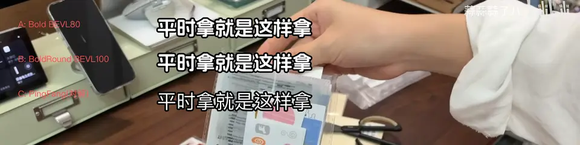
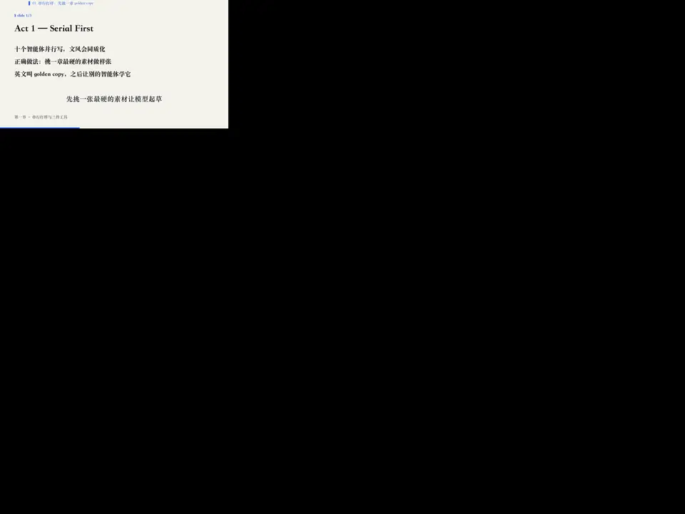

edit-film 包装 · 字体预设 Skill/edit-film（scripts/build.py 为唯一真源）
视频包装是「一套模板 + 参数化 theme」：字幕 / 章节卡 / 要点卡 / 行高亮全部由同一 ASS 生成器产出，字体只是 theme.font 一个开关。两个字体现役预设 + 一个更圆的备选，其余视觉参数（描边 / 主题色 / 深浅底）全部可调。
在片子目录 edit.json 里写 theme.font；不写默认 Alimama FangYuanTi
包装 B · 阿里妈妈方圆体（当前默认）
Alimama FangYuanTi · Bold wght700 BEVL80
2026-11-15 起默认。参照 B 站 vlog 白字粗描边圆体风：白字 #FFFFFF + 深描边 #101010（圆体建议描边 3.5–4），底部居中，术语高亮主题绿 #04D845。
theme.font: "Alimama FangYuanTi"（默认，可不写）

三字体并排比对
同文案同描边 · 1920×480
A = 方圆体 Bold（BEVL80）｜B = 方圆体 Round（BEVL100，更圆一档，备选）｜C = 苹方 PingFang SC（旧默认，需显式指定）。
theme.font: "Alimama FangYuanTi Round" / "PingFang SC"

A / B 候选 × 参照帧对比
1400×210
两个方圆体候选与参照 vlog 原帧的贴合度验证。

参照原型 · B 站 vlog 白字粗描边
BV1sLWC6sEVG · 1920×1080 原帧
包装 B 的参照对象：知识区 vlog 常见的白字粗描边圆体字幕风。
edit-film 包装 · 主题参数化 Skill/edit-film/scripts/layout.py + build.py L279–298
配色与版式不是写死的两套，而是全参数化。下图为浅底课件实测（Songti SC + 蓝 #2B5CE6），证明换主题零改代码。注意：最初的深色终端风样板成片已在 2026-11-14 磁盘清理中删除，深色主题目前无留存截图。
theme.accent / theme.panel{bg,text,sub} / subtitle.outline / size / margin_v；坐标由 layout.py --plan --apply 从片源推导
浅底主题实测 · Songti SC + 蓝色
Temp/edit-film-portability 成片抽帧
浅底课件 + 宋体 + 主题蓝 #2B5CE6：顶部常驻章节标签「▍01 标题」实际效果。浅底页字幕自动切深色字浅描边变体（SubL）。
theme.font: "Songti SC" + theme.accent: "#2B5CE6"